Don't We Have Enough Smart Things?
For the past couple of years, one of the more prominent pieces of technology on my kitchen counter has been a pint-sized information hub. Marketed as a device for communication and connection, it did far more than tell the time: it displayed favorite photos, helped managed grocery lists, enabled video calls with friends and family, and perhaps most impressively sold me products I didn't know I needed. It even came equipped with a voice assistant, allowing conversations from across the room, whether intentional or not.
I found the device particularly intriguing because of the moment in which it was released. It arrived too late to fully participate in the Internet of Things boom that swept through major tech companies, yet too early to benefit from the rise of generative AI and agentic systems. Hamstrung by its reliance on rigid, natively programmed applications, it refused to play nicely with other smart assistants or calendars and ultimately became little more than a dust-collecting artifact on my kitchen counter.
The catalyst for this project came from a recent initiative by the device's manufacturer: a push for all customers to upgrade to a premium subscription, offered free for a limited time. The campaign was deliberately disruptive. Every interaction - screensavers, menus, even video calls home to relatives - came with a persistent nudge to buy into the "latest and greatest." The advertisting was so relentlessly effective that it motivated me to finally remove the device from its dusty perch and replace it with something of my own design - one where everything could be truly custom.
This project evolved into a multi-month exploration of product design, embedded systems, and the realities of taking an idea from concept to completion. In this article, I'll walk through the highlights of that journey and conclude with a reflection of the final result.
Building the Core: ESP32 and HUB75-D
The two primary components of this project are the display and the processor. For the processor, I used a Hiletgo ESP32, which you may recognize from my Secure Boot article. This board offers a high degree of flexibility along with onboard Wi-Fi connectivity, making it well suited for handling both the display driving and application logic of my smart clock.
For the display, I selected an Adafruit 64x32 RGB LED Matrix (hereafter referred to as the Matrix) with a 5mm pitch.
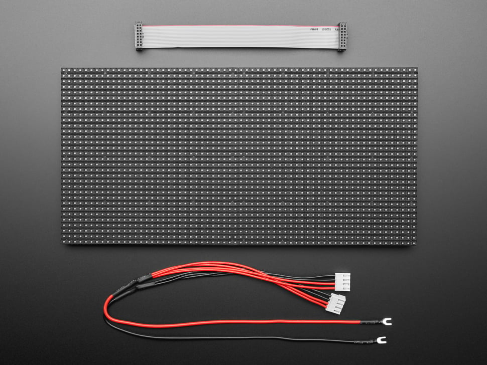
Picture of the Adafruit 64x32 RGB LED Matrix with 5mm pitch
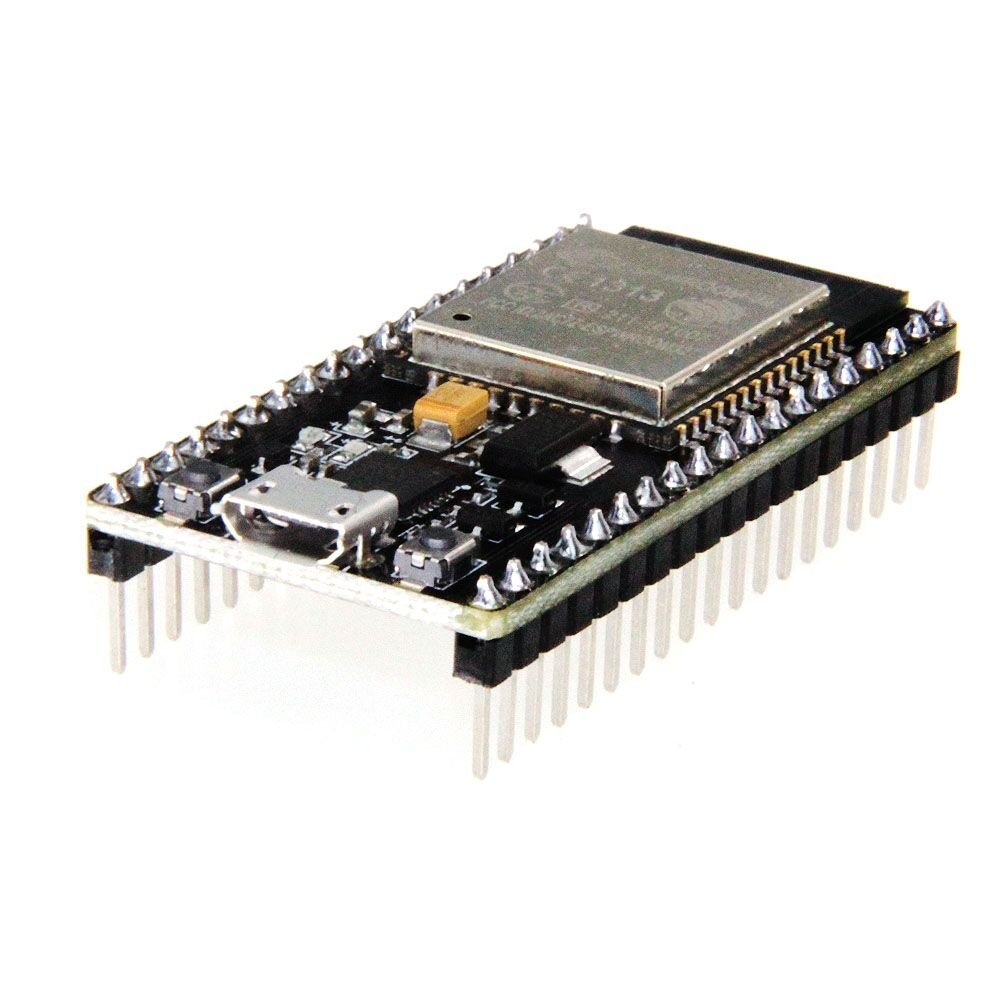
Picture of the Hiletgo ESP32 with Wifi and Bluetooth
The first step in this project was connecting the ESP32 to the Matrix. Fortunately, there are many online guides that document this process in detail. Below are some key takeaways from my own wiring experience.
First, it's important to understand that this Matrix is actually composed of two internally wired 16x32 sections. Because of this, there are two separate inputs for each color channel (red, green, and blue), as well as five address lines used to select which rows are currently being refreshed. Both sections share a common clock and latch signal, which proved helpful later in development.
The matrix uses a HUB75 interface, exposed via a 16-pin ribbon cable on the back of the panel. These pins include:
- Two inputs for each color channel (red, green, and blue)
- Five row-selection control signals (A, B, C, D, and E)
- One clock signal,
- One latch (write-enable) signal, and
- Three ground connections.
Not shown in the images is a separate 5V power input and ground, which I used to power the Matrix throughout the development process.
Most of the Matrix signals are connected directly to GPIO pins on the ESP32. Of the three available ground pins on the HUB75 connector, only two are tied to the ESP32's ground; the third is left unconnected, as it is primarily intended for daisy-chaining multiple panels. For the clock, latch, and E address signals, I added 220Ω resistors to improve signal stability and help with voltage regulation when interfacing with the ESP32.
With the hardware wired, the next challenge was rendering text on the display. To simplify the process, I used the MatrixPanel_I2S_DMA library, which abstracts away much of the low-level timing and refresh logic required by HUB75 panels. The basic drawing workflow looks like this:
- Define colors in memory. The MatrixPanel_I2S_DMA library uses the
color565format, where standard 8-bit RGB values (0-255) are converted into a 16-but color representation compatible with the Matrix. - Clear or initialize the background using
fillRect. Early in development, I filled the entire display using the Matrix's full width and height. Later, this approach was refined to better match the panel's optimal refresh behavior. - Position the cursor using
setCursorbefore rendering any text. - Render text by setting the desired text color (
setTextColor), text size (setTextSize), and outputting characters usingprint.
This library made it significantly easier to focus on layout and functionality rather than the underlying display protocol, allowing rapid iteration as the project evolved.
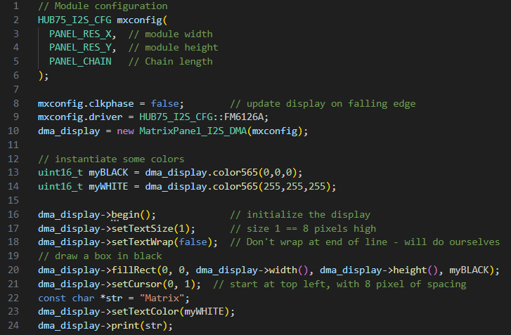
The code block used to write text to the Matrix
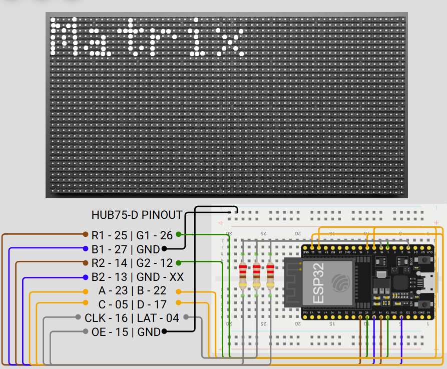
Wiring diagram for the Matrix and ESP32
Click here to see the ESP32 to Matrix wiring strategy.
ESP32 to Matrix Wiring Strategy
| Matrix | ESP32 | Description |
|---|---|---|
| R1 | 25 | Pin controlling the red LEDs for the top half of the Matrix. |
| G1 | 26 | Pin controlling the green LEDs for the top half of the Matrix. |
| B1 | 27 | Pin controlling the blue LEDs for the top half of the Matrix. |
| GND | GND | Pin connecting to board ground voltage. |
| R2 | 14 | Pin controlling the red LEDs for the bottom half of the Matrix. |
| G2 | 12 | Pin controlling the green LEDs for the bottom half of the Matrix. |
| B2 | 13 | Pin controlling the blue LEDs for the bottom half of the Matrix. |
| GND | Disconnected | Pin connecting to ground voltage between chained Matrices. I left this pin intentionally disconnected since I am not using a chain. |
| A | 23 | Control signal A. Used in conjunction with the B/C/D/E control signals to identify which row to display in binary. This signal is high when rows on the bottom half of the Matrix are being displayed. |
| B | 22 | Control signal B. Used in conjunction with the A/C/D/E control signals to identify which row to display in binary. This signal is high when rows 8-15 or 25-32 are being displayed. |
| C | 05 | Control signal C. Used in conjunction with the A/B/D/E control signals to identify which row to display in binary. This signal is high when rows 5-8, 13-16, 21-24, or 29-32 are being displayed. |
| D | 17 | Control signal D. Used in conjunction with the A/B/C/E control signals to identify which row to display in binary. This signal is high when rows 3-4, 7-8, 11-12, 15-16, 19-20, 23-24, 27-28, or 31-32 are being displayed. |
| Clock | 16 | Clock signal. Used to determine when new data should be shifted to color signals. In the code, I have adjusted the ESP32 to send new data on the falling edge of CLK, this way there are no race conditions or strange artifacts on the display when shifting data. |
| Latch | 04 | Latch signal. This signal is used as a timing reference for color data to be displayed on the Matrix. When Latch is high, data is displayed. |
| OE | 15 | Control signal E. Used in conjunction with the A/B/C/D control signals to identify which row to display in binary. This signal is high when an odd-numbered row is being displayed. |
| Ground | Ground | Pin connecting to board ground voltage. |
Programming the Essentials: Connections and Expressions
Wi-Fi
With the ESP32 successfully wired to the Matrix, the next step was programming the display to function as a fully fledged clock. One of my primary goals for this project was to implement a world clock synchronized using the Network Time Protocol (NTP). To accomplish this, the ESP32 needed to connect to the Internet, query an NTP server, and render the resuting local time on the Matrix.
There are numerous examples available that demonstrate how to connect an ESP32 to a local Wi-Fi network and perform a simple HTTP or NTP request. As a result, combining these examples with the text-rendering functions described in the previous section was straightforward, though still a critical milestone in the project.
From a computer security perspective, the need to hardcode Wi-Fi credentials directly into the firmware immediately raised concerns. Embedding sensitive network information in source code is both inflexible and insecure, so I needed a more robust solution. This led me to WiFiManager (wm), a library that temporarily turns the ESP32 into an access point (AP) to facilitate a secure network configuration. At a high level, WiFiManager works as follows:
- WiFiManager deploys a captive portal that prompts users to connect the device to a local Wi-Fi network. I used the
startConfigPortalfunction, providing a simple SSID and password to make the initial connection process straightforward. Once connected to the portal, the user can enter credentials for their desired network, which are then passed to the rest of the application. - To account for situations where no network is available, WiFiManager supports automatic portal timeouts. I configured
setConfigPortalTimeoutto two minutes, after which the temporary access point shuts down if no connection is established. - By default, the captive portal is blocking, meaning that no additional code executes until the Wi-Fi configuration process is completed. Later in development, I needed background tasks to continue running, so I disabled this behavior using
setConfigPortalBlocking(false) - Once a successful connection is made, WiFiManager stores the network credentials in the ESP32's EEPROM. This allows the device to automatically reconnect after a reboot or power loss. This plays a key role in making the clock resilient and user-friendly.
Scrolling Text
As development of the smart clock continued, I wanted to add support for rendering long strings of text, such as daily quotes or world clock details, in a way that was both readable and visually appealing. I quickly discovered that attempting to display large amounts of static text on a small Matrix led to cluttered and unattractive results. To address this, I implemented a cubic easing-based scrolling function that smoothly scrolls text across the display while fading it in and out. Below is a high-level overview of how this system works.
- To simplify timezone calculations for cities around the world, I created a custom
WorldCitystruct. This structure stores the city name, its UTC offset, and approximate sunrise and sunset hours. These additional fields are used later in the program to dynamically adjust text color based on whether it is daytime or nighttime in the selected city. - The text to be displayed is first loaded into a character buffer. In my implementation, I used buffers of length 32, which proved sufficient for rendering time and date strings for individual cities without uneccessary memory overhead.
- To create the scrolling effect, the text is rendered to the Matrix at a horizontal offset that changes over time. This offset is incremented at fixed intervals, giving the appearance of smooth motion. I use a floating-point variable
tto represent the elapsed time for a given text segment. By evaluating the value oft, the system determines whether the text should be scrolling in, remaining stationary, or scrolling out. - To ensure the motion feels smooth and natural, I implemented a helper function called
easeInOutCubic. This function takestas input and returns a floating-point value,eased, which controls how quickly the cursor moves when redrawuing text. The easing function follows the standard cubic ease-in-ease-out equation shown below: \[eased(t) = \begin{cases} 4t^{3}, & t \lt 0.5, \\ 1 - \dfrac{(-2t + 2)^{3}}{2}, & t \geq 0.5 \end{cases} \] - In the final implementation, the program retrieves the current date and time for a given location, calculates the appropriate cursor position based on the string length and elapsed display time, and redraws the text accordingly. This process repeats every few milliseconds, producing a smooth, readable scrolling animation that adapts dynamically as new information is displayed.
A snippet of the scrolling code and an animation of the end result is shown below.
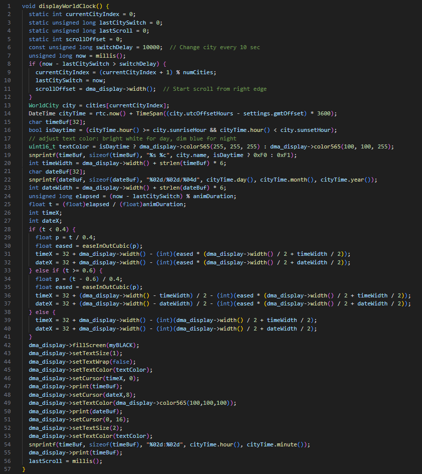
The code block used to write and scroll through the World Clock
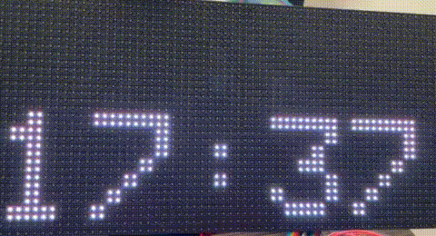
Animation for the World Clock scrolling program
Diving Deeper: Peripheral Accessories
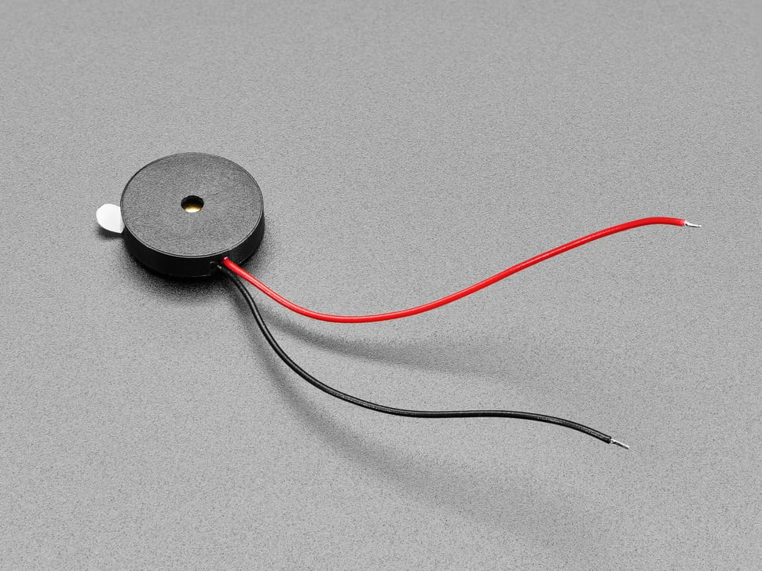
Now that the main programming has been fleshed out, the next step is to think of some additional functionality to include in the smart clock design that we can't get through programming alone. This led me to purchase some nifty sensors that added another level to the intricacy of this project: some buttons, a piezo for alarms, a battery backup for keeping time without power, and a dual temperature/elevation sensor to transform the smart clock into a functional weather station.
First, I grabbed some simple push buttons left over from my Arduino starter kit and created a quick toggle system for switching the Matrix between different screens. The buttons became a central part of the project as I tacked more sensors and functionality into the project; this way, the transition between different items seemed more natural when instantiated by a button press.
What is a clock without an alarm? I answered this question when I added a Piezo buzzer to the mix, also left over from my Arduino kit. This allowed me to install a quick alarm configuration section into the ESP32's programming, complete with setting alarm times through the WiFiManager captive portal and quick snooze using the push buttons.
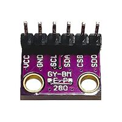
Next, I wanted to take it a little further and add a new sensor that would give me the current temperature of the room. That's what led me to add a BMP280 to my project. The BMP280 is a digital sensor that measures temperature and atmospheric pressure. This allows me to not only measure the temperature of the clock, but I can do some quick math to use the atmospheric pressure to determine the clock's elevation. This sensor is a small, low-power device that operates in both SPI and I2C, transforming my clock into a miniature weather station, barometer, and altimiter all in one.
For this project, I wanted to use the BMP280 in I2C mode. This involved making a couple of conscious decisions when it came to wiring and programming:
- There is a Chip Select Bit (CSB) that tells the BMP280 if we are using I2C or SPI communication. Because we are using I2C for this project, we leave this pin set to high (3.3V).
- The middle two bits, Serial Clock (SCL) and Serial Data (SDA), are used for clock and data communication for I2C protocol respectively. These are connected to GPIO 19 and 21 respectively on the ESP32. This wiring scheme is illustrated on the diagram at the end of this section.
- There is a pin at the end of the BMP280, Serial Data Out (SDO). This pin is unused for I2C communicaion, so I left it unconnected.
- Programming the BMP280 requires using the
Adafruit_BMP280object. Accessing temperature and pressure data can be done using reference documentation. - In the ESP32 code, the BMP280 is accessible at address
0x76when SDA and SCL are accessible and the chip has connections to power and ground. This was a finicky point for me as there are a couple of addresses the BMP280 can be reached at, so you may need to adjust this address a little bit to get it to come online.- I address this in code by checking to see if the BMP280 has "started" using
bmp.begin(0x76). If the BMP280 does not respond at this address, we cannot communicate with it and code may throw errors when we try to access data at this address. Encapsulating it inside anifstatement helps troubleshoot some memory issues down the road.
- I address this in code by checking to see if the BMP280 has "started" using
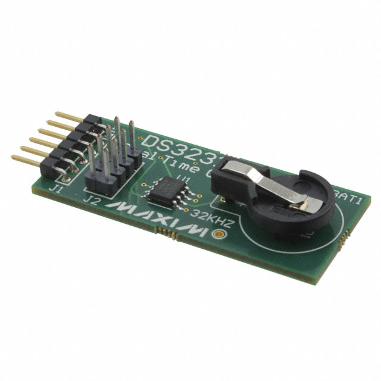
While EEPROM helps keep user preferences stored in non-volatile memory, what if we need more resilience in data protection? Enter the DS3231, a real-time clock (RTC) that features highly accurate date and time registers. The DS3231 features a cell battery backup, so it can maintain a very accurate measure of time over long periods of activity (or inactivity). For example, if we leave the smart clock unplugged for a couple of months and plug it back in later, we can expect the DS3231 to keep an accurate time down to fractions of a second. This is really important, considering the primary function of the smart clock is, well, keeping time.
Like the BMP280, I wanted to use the DS3231 in I2C mode. There were some modifications I made to the wiring and the code to make this happen:
- The DS3231 features SCL and SDA pins, and they function the same as the BMP280. To keep things clean in GPIO wiring, they are also attached to pins 19 and 21 respectively on the ESP32.
- This chip also features a Square Wave (SQW) pin that can output a square wave at 1 Hz, 4 kHz, 8 kHz, or 32 kHz. I did not have a need for this in my project, so I left this pin unconnected.
- This chip also features a 32K pin that provides a stable 32.768kHz square wave signal. This pin is mainly used as a clock reference for other devices, but I am already using the ESP32 as my clock reference for the Matrix and BMP280. This pin was also left unconnected in my build.
- The DS3231 also has a battery backup. I used a CR2032 and it's worked well for the past couple of months.
- In code, I used the
RTC_DS3231object to instantiate and reference my RTC. I instantiate the RTC by callingrtc.begin()and get the current time by callingrtc.now(). I can then parse the time and display the current second, minute, hour, day, month, and year.
Below are some programming snippets and a wiring diagram showing how these additional components factored into the final product.
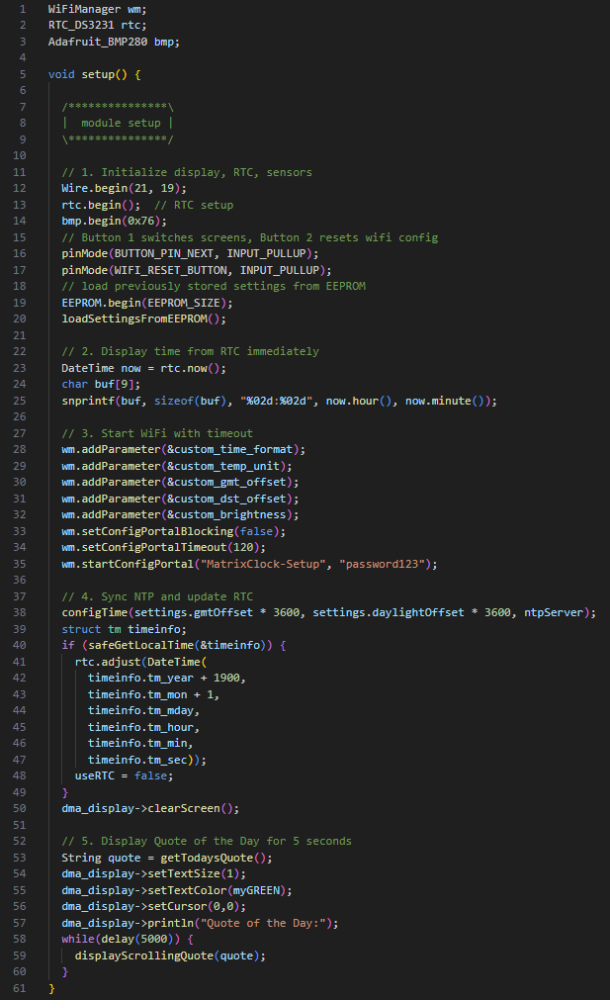
Picture of the code snippets used for the Buttons, Piezo, BMP280, and DS3231.
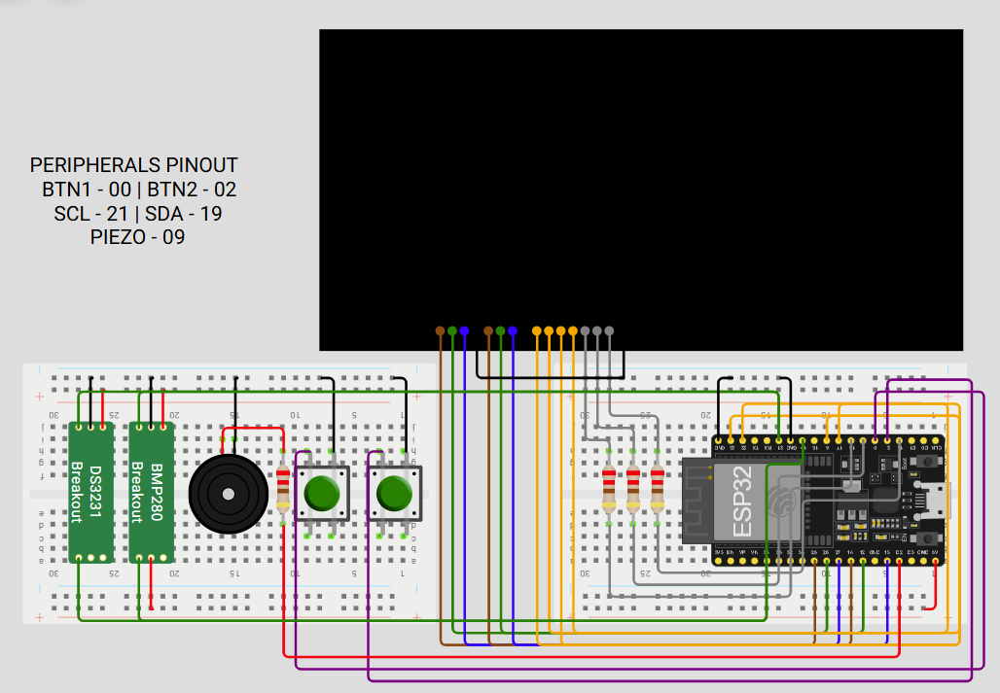
Wiring diagram for the Buttons, Piezo, BMP280, and DS3231.
Click here to see the accessory wiring strategy.
Accessory Wiring Strategy
| Accessory | ESP32 | Description |
|---|---|---|
| Button 1 | 00 | Pin listening for a falling edge (button press) from Button 1. When this button is pressed, the clock will alternate between displays (world clock, temperature/elevation, stock ticker, etc.) |
| Button 2 | 02 | Pin listening for a falling edge (button press) from Button 2. When this button is pressed, the ESP32 will refresh its Wi-Fi credentials and reboot, opening the WiFiManager captive portal for 2 minutes. The clock will fall back to RTC time via DS3231 until an NTP server can be reached. |
| SCL | 21 | Pin controlling the Serial Clock (SCL) for both the BMP280 and DS3231. The Serial Clock pin helps the BMP280 poll for changes in temperature/elevation as well as the DS3231 for knowing when to update the current time. |
| SDA | 19 | Pin controlling the Serial Data (SDA) for both the BMP280 and DS3231. The Serial Data pin helps the BMP280 update the current changes in temperature/elevation as well as the DS3231 for writing the current time to memory. |
| Piezo | 09 | Pin controlling the output of the Piezo buzzer. When this pin transmits a signal, it is emitted by the Piezo buzzer as an audible square wave. This is how the smart clock broadcasts alarms. |
Putting It All Together: What Happens Now?
I eventually reached a critical point in the development process where progress began to stall. Several challenged emerged simultaneously, and together they delayed the project's completion. Three primary issues, in particular, prevented me from releasing this project sooner:
- Power Management Challenges: During development, I relied on two separate power sources: one for the Matrix and another for the ESP32. Problems arose when it came time to consolidate these into a single, unified power solution. Doing so required more complex wiring and careful power regulation than I had initially anticipated. While this became a valuable learning experience in proper power management, it ultimately proved too cumbersome to integrate cleanly into the final design.
- Enclosure and Physical Design: I originally planned to include a custom-designed back cover for the clock, modeled in CAD and inspired by similar projects I had seen. However, the physical constraints of my 3D printer quickly became a limiting factor. Fitting all of the components - especially the tall battery backup - into a compact, functional enclosure was more challenging than expected. As a result, I pivoted to a simpler solution: a set of support legs extending from the rear corners, which allowed the clock to stand upright while preserving accessibility and airflow.
- Wiring Issues and Lost Momentum: The most significant factor in the project's delay was a loss of momentum near the finish line. The combination of power challenges, enclosure constraints, and the general demands of work and daily life pushed this project onto the back burner. Compounding these issues was a wiring failure that eventually prevented reliable communication with the ESP32 containing the firmware. At that point, I was left with a functional clock that I could no longer easily update or iterate on, further dampening motivation.
Despite these setbacks, the project ultimately delivered everything I wanted to replace the infotainment device on my kitchen counter. The clock features timekeeping, an audible buzzer, a scrolling world clock, motivational quotes, and even a stock ticker. This project fully leverages the ESP32's Wi-Fi and display capabilities.
Perhaps most importantly, the final stages of this project reinforced how critical time management and realistic planning are, especially for creative and tehcnically demanding builts. While the challenges were frustrating at times, they provided valuable lessons that will carry forward into future project. With clearer expectations and better planning, each new build becomes a little easier - and that, ultimately, is all part of the learning process.
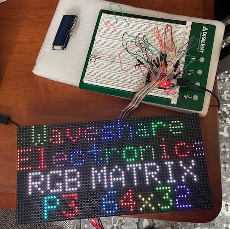
In this photo, I had just finished wiring together the Matrix. I mimicked the test layout from the developer to make sure all of my channels were working.
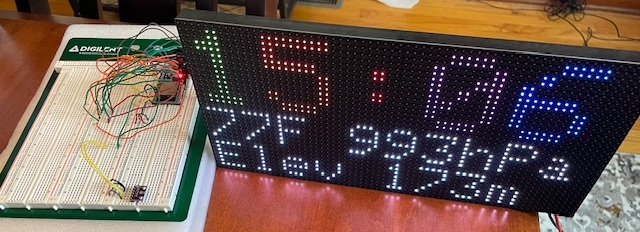
In this photo, I had just finished installing the DS3231 and displayed readings on the top page of the clock. I was also experimenting with different font sizes here: the clock face is set to font size 2, and each number has a different color based on the time of day.
Sources
Adafruit.com: Pictures of matrix, Piezo
Digikey.com: Pictures of BMP280, DS3231
Hiletgo.com: ESP32 picture
wokwi.com: Wiring schematics and board layouts
Published December 2025